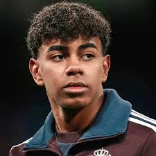

.jpeg)
Lamine Yamal Nasraoui Ebana (born 13 July 2007) is a Spanish professional footballer who plays as a right winger for La Liga club Barcelona and the Spain national team. Widely regarded as one of the best young footballers in the world, he is known for his dribbling, speed, crossing, technical proficiency, and vision. Lamine Yamal Nasraoui Ebana was born on 13 July 2007 in Esplugues de Llobregat, in the Barcelona metropolitan area of Catalonia, Spain, to waitress Sheila Ebana and building painter Mounir Nasraoui. Yamal's mother was born in Bata, Equatorial Guinea, and his father is from Larache, Morocco. His parents separated when Yamal was three, although both remained present through his childhood. The family had lived in Mataró, but around the time of his parents' separation, Yamal's mother moved to Granollers, where Yamal started playing football at the local club La Torreta at the age of four. He would alternate between both cities to spend time with his parents.[10] With his father in Mataró, Yamal grew up in Rocafonda, a neighbourhood described by El País as "forgotten, isolated and stigmatized"; he celebrates goals by making a gesture of the number 304, the last digits of the local postcode 08304. Following his success, his popularisation of the number has been credited with bringing pride and recognition to the working class community of Rocafonda. At six years of age, Yamal was scouted by FC Barcelona and was invited to training sessions at La Masia, signing for the club in 2014 and moving to Barcelona to live and train at the academy. Growing up through the youth ranks of La Masia, Yamal was soon viewed as one of the academy's best prospects.[15][17][18][19] Initially added to the Juvenil A team – already above his age grade – for the 2022–23 season,[18] Yamal was selected by Xavi to train with the first team along with other youngsters in early September 2022.[7][16] While still yet to sign his first professional contract with the club, he appeared to be one of the academy members to most impress the coach.[17][20] Yamal made his first team debut on 29 April 2023, replacing Gavi in the 83rd minute of a 4–0 victory against Real Betis in La Liga, in which he registered a shot on target against former Barcelona goalkeeper Claudio Bravo and became not only the fifth youngest player in La Liga's history at 15 years, 9 months, and 16 days old,[21] but also the youngest to appear for Barcelona's first team since the 15-year-old Armando Sagi in 1922, over a century before.[22] He won his first title with Barça on 14 May 2023, having been part of the squad that won the 2022–23 La Liga.[23] Despite this, he missed the title celebration the following week due to international duty with Spain.[24] 2023–24: First team breakthrough Although he remained on the Barcelona Atlètic squad throughout the season,[25] Yamal earned his first start for the club on 20 August 2023 in a 2–0 victory over Cádiz at the Estadi Olímpic Lluís Companys.[26][27] His first start was met with a standing ovation as he was subbed off with five minutes left in the game.[28] In his next starting appearance, Yamal was named man of the match after contributing towards two goals scored by Gavi and Robert Lewandowski in a 4–3 victory over Villarreal on 28 August 2023.[29][30] He was named the inaugural U23 Player of the Month for August as a result of his performances.[31] On 19 September, Yamal made his Champions League debut in a 5–0 victory over Antwerp.[32] On 2 October, Yamal extended his contract with Barcelona until 2026, with a buyout clause of €1 billion.[33] Two days later, he started in his first match of the Champions League against Porto.[34] On 8 October, Yamal scored his first goal for the first team in a 2–2 away draw to Granada and made his first El Clásico appearance as a substitute in a 2–1 loss at home on 28 October.[2][35] On 4 December 2023, Yamal was given the inaugural Golden Boy The Youngest trophy, which is awarded to the youngest player nominated for the Golden Boy award.[36][37] Subsequently, on the ceremony day, Yamal was not present due to school.[38] On 11 January 2024, Yamal scored in a 2–0 win over Osasuna in the semi-final of the Supercopa de España, becoming, at 16 years and 182 days, the youngest player to score in the Supercopa.[3] Yamal then played the last 29 minutes of the final against Real Madrid on 14 January.[39] Two weeks later, on 25 January, he scored in the Copa del Rey quarter-finals against Athletic Bilbao in an eventual 4–2 loss after extra time, becoming the youngest goalscorer in the competition's history.[40] On 11 February, Yamal scored his first brace in a 3–3 draw against Granada, earning the man of the match.[41] In the 2023–24 season, Barcelona finished second in La Liga and ended their Champions League run at the quarter-finals after being knocked out by Paris Saint-Germain.[42][43] At 16 years of age, Yamal broke several records for Barcelona during the season, making 50 appearances in all competitions.[44] In La Liga, Yamal became the youngest starter for Barcelona,[26] the youngest player to record an assist,[45] the youngest to score for Barcelona and in La Liga,[46][47] the youngest player to feature for Barcelona in El Clásico,[35][48] and the youngest player to score a brace in La Liga and first player ever to achieve this record under the age of 17.[49] He also became the youngest player to register more than 10 goal contributions in La Liga at 16 years and 213 days.[50] In the Champions League, Yamal became the second youngest player to feature in the cup (behind Youssoufa Moukoko),[32] the youngest player named in a starting line-up,[34] and the youngest player to play in the knockout phase.[51]

You can Know more about steve Jobs by clicking this link Lamine Yamal.